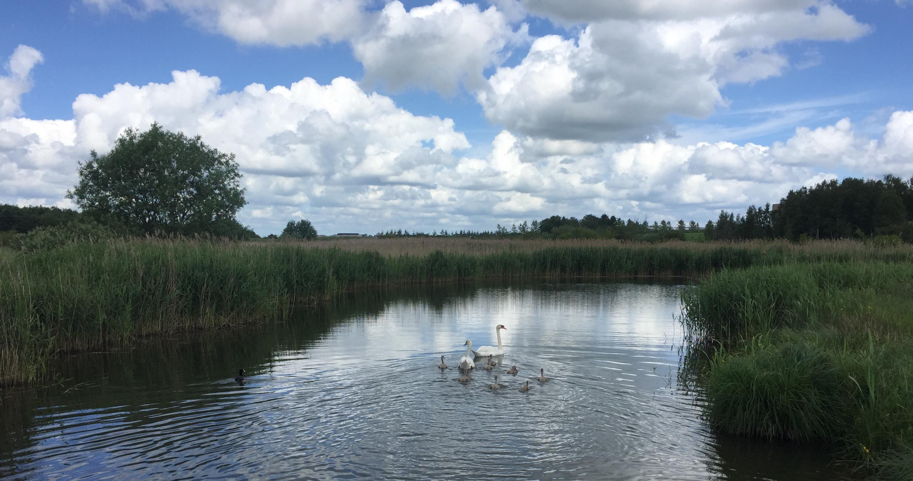
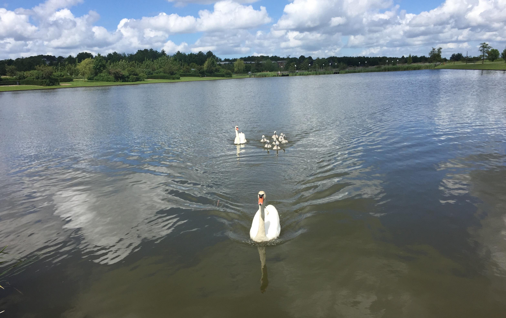

Gå eller løb nytåret ind med dine naboere
Start: Klokken 10.00.
Slut: Ca. klokken 11.00.
Start: Broen, der adskiller Trekroner Bysø og Trekroner Natursø - lige ved RUC.
Mål: Trekroner Butikstorv.
Rute: Stien rundt om søerne. Dvs. ingen trafikerede veje.
Link til tilmelding: Send e-mail
Tilmelding er ikke påkrævet.
Afslut året med en forfriskende løbe- eller gåtur rundt om Trekroners skønne søer, mens du nyder den lokale natur og det friske vejr.
Et nytårsløb for alle; store som små, unge som ældre
Der vil være mulighed for at løbe og/eller gå så langt, som benene tillader.
Der vil rundt om søen være hjælpere, der både vil heppe og opmuntre samt sørge for, at alle når godt i mål, hvor der vil være lidt mousserende og lidt kransekage til både børn og voksne - så det forgangne år hyldes og afsluttes med manér.
Det er et ca. løb, hvorfor følgende blot er vejledende:
Medbring blot påklædning til vejret og passende fodtøj samt det gode humør. Resten sørger vi for.
Så tag din familie i hånden eller din hund i snor og løb eller gå en dejlig tur.
Vi glæder os meget til at se dig den 31. december til dit lokale nytårsløb!
 